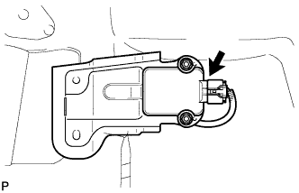

Yaw Rate Sensor Installation |
| 1. Install Yaw Rate Sensor Assembly |
 |
Connect the yaw rate sensor connector.
 |
Insert the claw of the yaw rate sensor cover into the yaw rate sensor assembly, and install the yaw rate sensor assembly together with the cover to the body with the 2 bolts.
| 2. Install Front Seat Assembly LH |
)| 3. Slide Adjuster Lock Synchronization Inspection |
)| 4. Install Seat Track Cover OUT LH |
)| 5. Install Seat Track Bracket Cover INN LH |
)| 6. Install Seat Track Bracket Cover Inner Front RH |
)| 7. Install Seat Track Bracket Cover Outer Front RH |
)| 8. Install Front Seat Headrest Assembly |
)| 9. Connect Battery Negative Terminal |
| 10. Inspect and Adjust Seat Belt Function |
)| 11. Inspect Airbag Warning Light |
)| 12. Acquire Yaw Rate Sensor 0 Point |
)| 13. Test Mode Inspection |
)| 14. Check and Clear DTCs |
)| 15. Setting Procedure When Disconnecting/Reconnecting Battery Terminal |
)